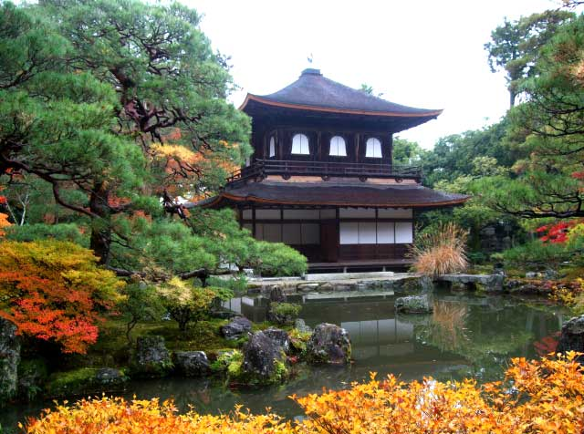

A brief explanation on how Japanese Gardens changed through the time

Japanese gardens are very famous and they can be found in many different places in the world. They use natural materials to represent the ocean, mountains, hills, and rivers on smaller scales and are great places for admiring nature, socializing, or just passing time with tranquility. However, even though they are a famous representation of Japanese culture, they are actually a result of communications between different cultures in Asia.
This article is going to cover a little of the history of Japanese gardens, getting mostly based on the book “Japanese Gardens”, by Matsunosuke Tatsui.
The origin of Japanese gardens may be traced from the 6th to the 7th century, in the era of the Empress Suiko, but the art of garden-making was actually imported to Japan from Korea, as well as many other arts that were brought by Koreans in Japan. Later in the Nara Period, from the 7th to the 8th century, the intercourse between China and Japan was opened, so Chinese influence began to appear in various aspects of Japanese life. In the succeeding period of Heian, the style imported from Korea and China was gradually adapted to suit the Japanese lifestyle, so new styles that can be considered to be “essentially Japanese” (although not purely) began to appear, with elements of elegance and lightness.
For centuries the traditional Japanese style of landscape gardening prevailed, but a big change happened with the spread of zen philosophy in the country; as a normal consequence, Buddhist priests started to design their own gardens, which resulted in a new way of seeing them. Gardens designed by Buddhist priests were not so decorative as the ones that used to prevail before this, since they valued simplicity and harmony more than anything. However, this simplicity didn’t last forever.
In the Muromachi period, from the 14th to 16th centuries, the country was living an age of “heroic spirit”, which naturally brought a new change to the popular taste for gardens. The richness of form, color, and luxury started to be valued in architecture, as well as in garden-making. Things now began to have more color and vigor.
It needs to be made clear, though, that no change in the way gardens were made was responsible for killing the old way completely; on the contrary, all these changes in the way gardens are made inevitably incorporated characteristics of other moments, contributing to the evolution of the practice and making it clear the importance of all these different periods in the modulation of the gardens that exist until today.
The Edo Period, from the 17th to the 19th century, — one of the most famous periods in Japanese history that was remarkably an age of great growth in literature and the fine arts — also bought inevitable changes to popular taste. Improvement in transportation, security, and the popularity of literature had an effect on garden designers. Small house gardens that pleased individuality with literature associations began to gain more popularity.
From the 20th century to the present, Japanese life was very influenced by western culture, which brought many new features to garden-making that cannot be described here in a linear path anymore, but it’s possible to be assured that it has been a time of great variety in the practice.
There is not only one type of Japanese garden, which is obvious when considering the long history and the large range of applications they have. The three most famous ones among them are Hill Gardens, Flat Gardens, and Tea Gardens. Since this article is not meant to focus on different types of gardens, it’s not convenient to explain all the structural differences between them, but you can have a general idea of what each one is with this brief description:
“The Hill Garden features a hill, with which are usually combined a pond and a stream. Garden designers in the Edo period explained that the hill garden represents the heart of the mountain or the remote recess of a valley, and the flat garden the coast or islands”. […] Flat gardens in Buddhist temples, as they have been described in the historical introduction, are often symbolic, but modern gardens are mostly in the style of the tea garden, with stone lanterns and water basins for ornamentation, if not for practical use. […] Tea gardens are gardens attached to tea-houses, and in their design, as in that of others, the reproduction of a beautiful example of nature is aimed at. However, as in the tea ceremony, guests are required to observe certain fixed rules while they make their way from the gate into the house, the garden is so designed as to adapt itself to the requirements. The question of utility, therefore, plays an important part.” (Matsunosuke Tatsui, “Japanese Gardens”)
Back to the top